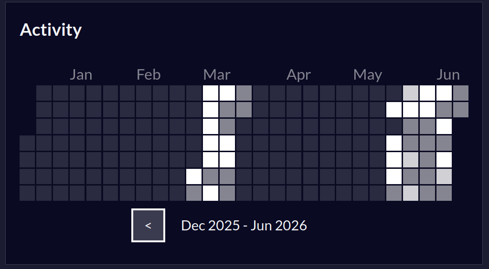

El porvenir es largo
He escrito y descrito muchas cosas en esta primera entrada pero realmente es algo que se me ha hecho difícil seguir. Si bien es mi primera entrada la he borrado y escrito varías veces a tal punto que todo se distorciona. Más sin embargo no me voy a rendir, decidí hacer esta página para prácticar y eso es lo que estoy haciendo, como su creador estoy armando, desarmando, construyendo, mejorando, destruyendo y aprendiendo para volverlo hacer. Me descargué el libro de eloquent javascript:
Espero no saturarme con tanto contenido, sin embargo ya salí de vacaciones del Sena, debido a que este trimestre entregué todos mis trabajos a tiempo y aprendí mucho, bien fue difícil pues la ingeniería de software tiene muchas cosas bien aburridas como la métodología en si. El mundo del software no implica siempre lo que vemos en tutoriales. Uno puede seguir diligentemente un tutorial de 5 horas, pero en este mundo hay tutoriales para todo. Si siempre usas el tutorial, sabrás seguir tutoriales pero nunca a crear nada. Por eso no estoy buscando otra información fuera de FreeCodeCamp, el cuál estoy siguiendo diligentemente.
